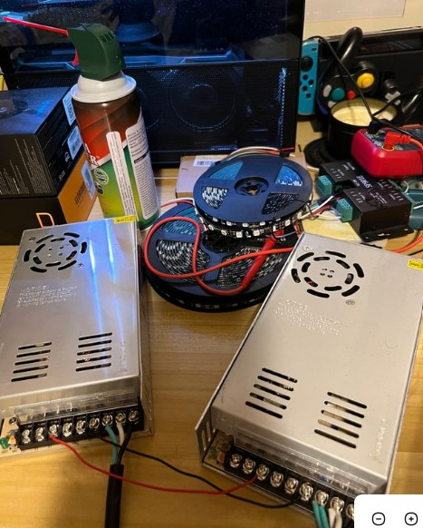
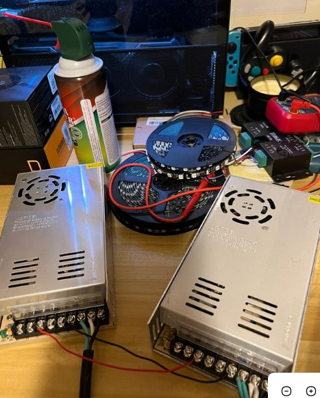

Below is an image of the Power Supply and Micro-Controller used to power and program the LED Display. The LED's generate plently of heat, when providing the user with maximum light. However, the power is controlled and maintained at safe voltage levels to prevent burning, blowout or blinding. The Microtroller is used in combination with ardiuno, which is a programming language resposible for the patterns of the LEDs. The Microcontroller also recieves signals from the Li-Dar Sensor to alternate colors or remain idle.
 
Below is an image of the prototype, which includes the LED's. The LED's themseleves are programmed to be in sync and required individual testing based off are Software and Hardware Engineer Tyler. The LED's were discussed for not only heat but spacing due to the area we were given at the GLSC (Great Lake Science Center) and the visual we wanted to provide the user. Lastly, The LED design is also Horizontal for the provided space and wall given.

Software is an important part of this project. Engineer Tyler shows us a segment of the code here, where the code defines the "Active State". The Active State is the portion of the code used when the user is in proximity of the LiDAR sensor and processes a function depending on the amount of feet the user is away. The CRGB is describing the different colors, in the first software photo you can see the default can be chosen as well with "green, aqua and blue". The beat is the speed of the wavelength and wavelength is the frequency. as qouted from Tyler "Once the distance input is received it instantly goes to its correct frequency, speed, and color.". also the user should also know this code segment is part of a bigger code but shown to get an idea of the functionality.
Below is the Structure used to hold the acrylic glass, Engineer Logan created this structure using "Solidworks" which is widely used in Mechanical Engineering for creating foundations, instruments or any item/object that requires precise measurements. If you look closley you can see the detail of the drilling needed in the first bubble and the struture holder in the second bubble. Image below in the middle is a side look of the structure being held with the acrylic glass surrounding the horizontal LED strips


Schematics are plays a part in the structure, hardware and software of this LED Display project. Engineer Lillian has used Schematics to achieve power locations, LED visual Distancing and Software contrains for the LED display. Schematics allows the LED display to be precise across the structure of acrylic glass glass and more in sync. The Schematics also allowed the display to utilize space efficiently and in result provides better visual effects and hazardous preventions.


Engineer Zachary created the team website that allows people to stay updated in real-time. The website also serves as a way to show and display some features from the interactive display like the software, and what it takes to create the structure and share information regarding the concept of wavelengths. The team portion is divided into each engineer's role and allows users on the home screen to view and select the particular engineer's role they're interested in learning about for this project. also, if the project needs to be briefly summarized then the website can break down the major components and simplify them for the user.